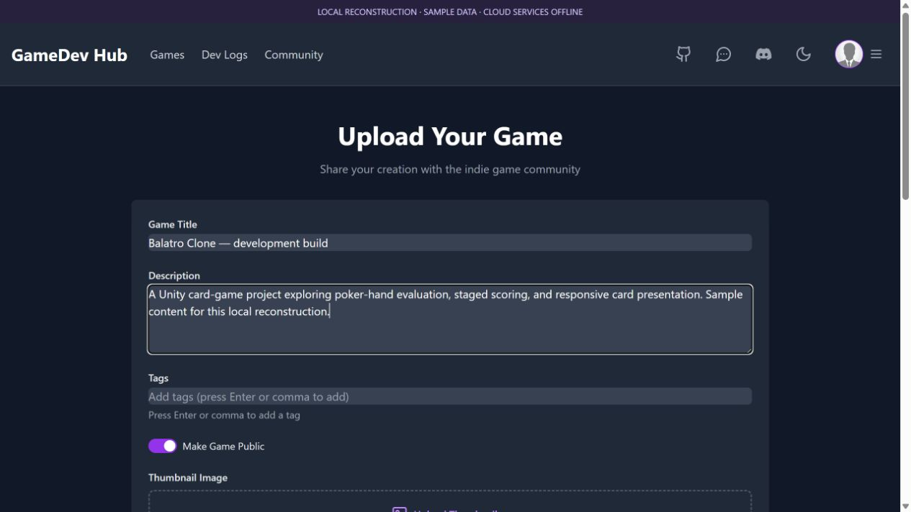
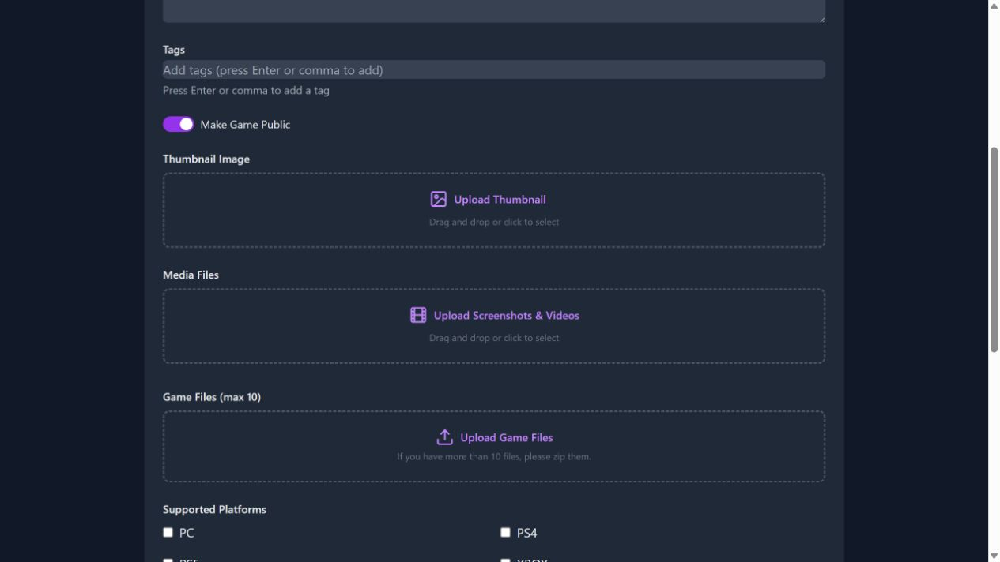

Coordinate storage failures
The upload controller attempts S3 cleanup on error. A next iteration would await cleanup explicitly and make retries idempotent, because a SQL transaction cannot roll back object storage.
Hand-codedRecipe No.04 / Full-Stack Sling / FULL-STACK ENGINEERING / MY-WEB
GameDev Hub connects game discovery with the machinery of publishing: accounts, uploads, relational metadata, and live Discord events.

THE PROJECT
I built a platform where developers can prepare a game listing, attach media and downloadable builds, and describe their project through tags, platforms, and engine metadata. The repository also includes profiles, devlogs, threaded comments, and Discord account and bot integration.
The engineering challenge sits between those features: keeping file uploads associated with the right records, carrying identity through API requests, querying a connected data model, and managing a long-lived gateway connection.
Archived project · Source reviewed at commit 0167189 ↗. Screenshots show the original UI with a local fixture API, not a restored cloud backend.
01 / ARCHITECTURE
The client handles interaction and presentation. Express coordinates identity, structured data, uploaded objects, and external events.
Forms · Redux · Axios
Game pages · Bot console
Routes · Passport
Controllers · WebSocket relay
Architecture traced from source. External services are not connected in the local screenshot reconstruction.
02 / PUBLISHING PIPELINE
An upload crosses two storage systems. The client first requests a game ID, then sends a multipart update so files and database records share that identity.
Create a game and its statistics record before attaching content.
Combine metadata, a thumbnail, media, and downloadable builds in FormData.
Multer streams files to S3 under a game-specific key prefix.
Create media/file rows, connect or create tags, and update the game listing.


The controller groups media and downloadable-file inserts into one Prisma transaction. That protects this pair of database operations; S3 uploads and the later game update sit outside that boundary.
Read the upload controller ↗await prismaClient.$transaction([
prismaClient.gameMedia.createMany({ data: mediaEntries }),
prismaClient.gameFile.createMany({ data: fileEntries }),
]);03 / DATA MODEL & DISCOVERY
The Prisma schema separates accounts and profiles from games, files, and community content. Games relate to owners, tags, media, builds, statistics, and devlogs. Comment replies use a self-relation; devlogs can link contributors.
Enums represent engines, platforms, and licenses, while explicit relations describe how records connect and which deletions cascade.
Explore the schema ↗Discovery searches titles and descriptions without case sensitivity, filters out private and soft-deleted games, and orders by recent updates. A count query supplies pagination metadata alongside the result page.
The query includes owner, thumbnail, tags, and statistics so the client can render a complete game card.
Read searchGames ↗The same condition is used for counting and fetching results. The subsequent query applies take: size and skip: (page - 1) * size to paginate.
Excerpt from searchGames; formatting condensed.
const searchCondition = {
OR: [
{ title: { contains: searchQuery, mode: 'insensitive' } },
{ description: { contains: searchQuery, mode: 'insensitive' } },
],
AND: {
isPublic: true,
deletedAt: null,
},
};04 / IDENTITY & EXTERNAL SYSTEMS
Passport handles local credentials and Discord account linking. Passwords are hashed with bcrypt. The server includes Redis-backed sessions and JWT issuance; the React client carries bearer tokens through Axios and caches profile state in Redux.
This connects login screens to server middleware and user-owned resources, rather than treating authentication as a standalone form.
Passport integration ↗The bot controller tracks gateway sequence numbers and session IDs, sends heartbeats, handles reconnect signals, and includes a resume path. A browser-facing WebSocket relays events into a log console with selectable details.
A separate API interceptor handles Discord rate limits using the server’s retry delay. These paths are present in source; a live bot connection was not exercised for this reconstruction.
Gateway controller ↗05 / ENGINEERING REFLECTION
The upload controller attempts S3 cleanup on error. A next iteration would await cleanup explicitly and make retries idempotent, because a SQL transaction cannot roll back object storage.
The data model has visibility and download flags, but the original S3 uploader uses public-read objects. Private objects and authorized download URLs would align storage access with those flags.
The existing Jest suites cover controllers, API wrappers, and retry handling. Injecting service clients and closing them during teardown would let tests finish independently of Redis.
The original React production build and ESLint check completed. All 41 assertions across four Jest suites passed after generating Prisma’s client, but the test command exited unsuccessfully when its Redis connection failed after teardown. The build also reports a missing stylesheet reference and a large JavaScript chunk.
The catalog and publishing form were inspected in the original client using a small local fixture API. PostgreSQL persistence, S3 uploads, production authentication, and live Discord connectivity remain unverified in this reconstruction.